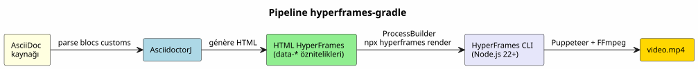

HyperFrames-Gradle: AsciiDoc'u MP4 Videoya Dönüştürün
Yayınlandı: 31 May 2026
İki hafta önce başlattım`capsule-gradle`— bir desteyi dönüştüren bir eklenti TTS ile WebM video kapsülünde reveal.js. Bugün yeni bir eklenti ekliyorum: hyperframes-gradle. capsule-gradle’in yapmadığı bir şeyi yapıyor: AsciiDoc’u reveal.js üzerinden geçmeden doğrudan MP4 videoya dönüştürmek.
İşte bu eklentinin var olma nedeni ve mevcut sistemle nasıl eklemlendiği, ve HeyGen’in HyperFrames motorunun içerik üretim hattına neler kattığı.
Video Pipeline’ındaki Boşluk
Dokümantasyon hattım iki tür video üretmektedir:
-
Tekrar Modülü (capsule-gradle) — WebM ile kaydedilmiş bir reveal.js sunumu
TTS anlatımı. Bir modülü tekrar gözden geçirmek için mükemmel.
-
Animasyon slaytları (slider-gradle) — etkileşimli bir reveal.js HTML sunumu
yüz yüze eğitmen.
Ancak üçüncü bir format eksik: standalone video.
Kullanım durumu |
Güncel çözüm |
Eksik |
Eğitmen slaytları |
slider-gradle → reveal.js |
✅ |
Tekrar kapsülü |
capsule-gradle → WebM |
Lütfen çevrilmesini istediğiniz metni gönderin. |
Teaser video |
Hiçbiri |
❌ |
Animasyonlu teknik demo |
Hiçbiri |
❌ |
Belgeden videoya |
Hiçbiri |
❌ |
İlk kullanım durumu kritiktir: nasıl otomatik olarak oluşturulur GSAP animasyonları içeren, bir projeyi veya modülü tanıtan 60 saniyelik bir video, TTS anlatımı, müzik altyapısı — tamamı aynı AsciiDoc dosyasından sadece slaytlar mı?
Capsule-gradle yanıt veremez: zaten bir reveal.js destesine ihtiyacı var. slider-gradle bu desteyi düzgün bir şekilde oluşturuyor, ancak video işleme için tasarlanmamış. Doğrudan bir pipeline gerekiyordu: AsciiDoc → video.
HyperFrames: Motor
Keşfettimhttps://github.com/heygen-com/hyperframes[HyperFrames] il y a birkaç gün. HeyGen tarafından oluşturulmuş açık kaynaklı (Apache 2.0) bir framework’tür, yapay zeka videosunun tek boynuzlu atı. GitHub’da 22.700 yıldız. Pitch şu şekilde özetlenebilir: bir cümle:
HTML yazın. Videoyu işleyin. Ajanlar için oluşturuldu.
Prensip şudur: HTML’i şu şekilde yazarsınız`data-*`öznitelikleri, referans veriyorsunuz bir GSAP animasyonu (veya CSS, Lottie, Three.js…), ve motor tüm bunları MP4 olarak işler Puppeteer (headless Chrome) + FFmpeg aracılığıyla. Deterministik sonuç: aynı girdi, aynı kareler, aynı video.
<div id="stage" data-composition-id="intro" data-start="0" data-width="1920" data-height="1080">
<video class="clip" data-start="0" data-duration="6" data-track-index="0"
src="background.mp4" muted playsinline></video>
<h1 id="title" class="clip" data-start="1" data-duration="4" data-track-index="1">
Formation Docker & Kubernetes
</h1>
<audio data-start="0" data-duration="6" data-track-index="2"
data-volume="0.3" src="music.wav"></audio>
<script src="https://cdn.jsdelivr.net/npm/gsap@3/dist/gsap.min.js"></script>
<script>
const tl = gsap.timeline({ paused: true });
tl.from("#title", { opacity: 0, y: 40, duration: 0.8 }, 1);
window.__timelines = window.__timelines || {};
window.__timelines.intro = tl;
</script>
</div>HyperFrames’ı Remotion’dan farklı kılan nedir? React yok, yok bundler, JSX yok. Yapay zeka ajanlarının yerel olarak yazabildiği ham HTML. Tam olarak benim pipeline’ım için biçilmiş kaftan: deepseek ile planner-gradle bir SPG/SPD planından ve bir Gradle eklentisinden bu HTML’i oluşturabilir onu MP4’e dönüştürebilir.
Eklenti Mimarisi
hyperframes-gradle tüm pluginlerimle aynı deseni izliyor: « Bağımsız Eklenti + Tüketici Kökü » deseni.
hyperframes-gradle/
├── settings.gradle.kts ← racine consommateur (dogfood)
├── build.gradle.kts ← 3 lignes : apply plugin hyperframes
├── hyperframes-plugin/ ← BUILD INDÉPENDANT
│ ├── gradlew ← son propre wrapper
│ ├── build.gradle.kts ← java-gradle-plugin
│ ├── src/main/kotlin/education/cccp/hyperframes/
│ │ ├── HyperframesPlugin.kt
│ │ ├── GenerateHyperframesHtmlTask.kt
│ │ ├── RenderHyperframesTask.kt
│ │ └── HyperframesExtension.kt
│ ├── .agents/ ← gouvernance agent
│ └── doc/
│ └── HYPERFRAMES_ARCHITECTURE.adoc
└── video.yml ← configuration dogfoodDört Adımlı Pipeline

-
AsciidoctorJ, AsciiDoc kaynağını ayrıştırır ve özel blokları çıkarır
[hyperframes-composition], [hyperframes-track], `[hyperframes-animation]`Lütfen çevirmek istediğiniz metni sağlayın.
-
GenerateHyperframesHtmlTask, HyperFrames HTML’ini şu şekilde oluşturur:
`data-*`karşılık gelen öznitelikler.
-
RenderHyperframesTask, HyperFrames CLI’sini şu şekilde çağırır:`ProcessBuilder`Lütfen çevrilecek metni sağlayın.
`npx hyperframes render --input index.html --output video.mp4`Lütfen çevirmek istediğiniz metni sağlayın.
-
MP4 şurada konuşlandırılmıştır:`output/`bir … ile`metadata.json`orkestrasyon için.
AsciiDoc DSL’i
Eklentinin gerçek katma değeri, AsciiDoc DSL’dir. Kullanıcı asla HTML yazmaz. Mevcut AsciiDoc belgesini şu şekilde notlandırır:
= Formation Docker & Kubernetes
:hyperframes-width: 1920
:hyperframes-height: 1080
:hyperframes-fps: 30
[hyperframes-composition, id="intro"]
== Introduction
Le titre apparaît avec un fondu GSAP sur fond vidéo.
[hyperframes-track, index=0, start=0, duration=6]
video::assets/background.mp4[muted, playsinline]
[hyperframes-track, index=1, start=1, duration=4]
Formation Docker & Kubernetes
[hyperframes-animation, type=gsap]const tl = gsap.timeline({ paused: true }); tl.from("#title", { opacity: 0, y: 40, duration: 0.8 }, 1); window.timelines = window.timelines || {}; window.__timelines.intro = tl;
docinfo nitelikleri (:hyperframes-width:) boyutları yapılandırır. Custom blokları kompozisyonları ve track’leri tanımlar. Blok `[hyperframes-animation]`ham GSAP kodu içerir — yapay zeka aracısının doğal dil açıklamasından oluşturabilir.
Node.js Bridge’i
Teknik sürtünmenin tek noktası: HyperFrames Node.js/TypeScript ile yazılmıştır, ve eklentilerim Kotlin/JVM dilinde. Çözüm bir`ProcessBuilder`Lütfen çevrilecek metni sağlayın.
class RenderHyperframesTask : DefaultTask() {
@TaskAction
fun render() {
val process = ProcessBuilder(
"npx", "hyperframes", "render",
"--input", inputHtml.absolutePath,
"--output", outputMp4.absolutePath
)
.inheritIO()
.start()
val exitCode = process.waitFor()
require(exitCode == 0) {
"HyperFrames render failed with exit code $exitCode"
}
}
}JVM ↔ Node.js arasında sıfır kod bağımlılığı. Sözleşme komut satırı üzerinden sağlanır. ve diskteki dosyalar. Bu, şuyla aynı desendir:`plantuml-gradle` (PlantUML CLI’yı çağıran) veya`slider-gradle`(AsciidoctorJ’yi çağıran). Güneşin altında yeni bir şey yok — sadece daha yeni bir araca uygulandı.
İki Video Eklentisi, İki Kullanım Amacı
capsule-gradle |
hyperframes-gradle |
Kaynak |
reveal.js destesi (mevcut HTML) |
AsciiDoc → HTML HyperFrames |
Kullanım durumu |
Tekrar Modülü |
Bağımsız açıklayıcı video |
Doğa |
Slaytlar → video |
Belge → video |
İşleme |
Playwright Java → WebM |
HyperFrames CLI → MP4 |
Animasyon |
reveal.js yerel geçişleri |
GSAP/CSS veri öznitelikleri |
Yığın |
%100 JVM (Kotlin) |
JVM + harici Node.js CLI |
Birbirlerinin yerini almazlar. Birbirlerini tamamlarlar. Eksiksiz değer zinciri:
AsciiDoc ──→ slider-gradle ──→ deck reveal.js ──→ capsule-gradle ──→ WebM (tekrar kapsülü)
AsciiDoc ──→ hyperframes-gradle ──→ MP4 (bağımsız video)
Kullanıcı tek bir AsciiDoc dosyası yazar. slider-gradle slaytları üretir. capsule-gradle revizyon kapsülünü üretir. hyperframes-gradle üretir tanıtım videosu ve teknik demolar.
Yol Haritasının 6 EPIC’i
Eklenti 6 EPIC şeklinde yapılandırılmıştır:
EPIC |
Açıklama |
Öncelik |
HF-0 |
Bootstrap yönetişim + mimari çerçeveleme |
✅ TAMAMLANDI |
HF-1 |
Gradle stub eklentisi + AsciidoctorJ entegrasyonu |
P0 |
HF-2 |
Bridge CLI HyperFrames (ProcessBuilder → npx → MP4) |
P1 |
HF-3 |
DSL AsciiDoc özelleştirmeleri (bloklar, docinfo, şablonlar) |
P1 |
HF-4 |
runner-gradle entegrasyonu (metadata.json) |
P2 |
HF-5 |
Kullanıma hazır şablonlar (title-card, code-diff, captions) |
P3 |
HF-6 |
CI + Maven Central / Gradle Portal yayını |
P3 |
000 (bootstrap) oturumu zaten tamamlandı. 001 oturumu HF-1’e saldıracak: Gradle eklentisinin stub’ı ve AsciidoctorJ entegrasyonu.
Neden Çalışır
Üç neden:
-
HyperFrames "built for agents" şeklinde tasarlanmıştır. Pipeline’ım yapay zeka ajanlarına dayanıyor
(planner-gradle + deepseek) içerik üreten. HyperFrames şunları kabul eder: Ham HTML — LLM’lerin en iyi hakim olduğu format. React yok, yok JSX yok, ajan için öğrenme eğrisi yok.
-
AsciiDoc DSL’i doğaldır. Tüm ekosistemim AsciiDoc konuşuyor.
slider-gradle, codex-gradle, training-gradle — hepsi şunları tüketir:`.adoc`Lütfen çevrilecek metni sağlayın. Özel bloklar ekle`[hyperframes-composition]`bir uzantıdır mantıklı, bir kopuş değil.
-
Node.js bridge kanıtlanmış bir desendir. JVM dışındaki ProcessBuilder,
PlantUML, Graphviz ve Piper için zaten yaptığım şey bu. HyperFrames ekle mimariyi değiştirme — bu sadece bir harici araç daha, Gradle üzerinden yönetilen.
|
Bu desenin asıl gücü, içinde hiçbir npm bağımlılığı bulunmamasındır Gradle build’i. Eklenti herhangi bir Node.js kodu içe aktarmaz. Şunu yürütür: shell komutu. HyperFrames gelişirse veya bozulursa, eklenti bağlı kalmaz — komutu güncellemek yeterlidir. |
Sonuç: Kayıp Halka
hyperframes-gradle ile video işlem hattım tamamlandı. Şunlara sahibim:
-
Etkileşimli slaytlar (slider-gradle)
-
Tekrar modülleri (capsule-gradle)
-
Standalone videolar (hyperframes-gradle)
Üç format. Tek bir kaynak dosya: AsciiDoc.
Bir sonraki hedef HF-1: eklentiyi derlemek ve bir … oluşturmak notlandırılmış bir AsciiDoc belgesinden ilk HTML HyperFrames. Oturum 001 zaten çerçevelendi.
hyperframes-gradle mevcut. Yönetişim yürürlükte. Backlog yazıldı. Mimari belgelendi. Eklenti doğdu.
Referanslar
-
foundry/public/hyperframes-gradle/hyperframes-plugin/doc/HYPERFRAMES_ARCHITECTURE.adoc— Detaylı Mimari